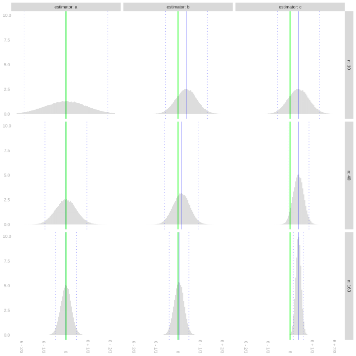

19 Homework: RVs, Markov’s Inequality, Chebyshev’s Inequality, Biased Estimators
Download this assignment — unzip it, open homework-markov-chebyshev.qmd in Positron, and answer inside the answer blocks.
$$ \newcommand{X}{} \newcommand{Y}{}
$$
\[ \DeclareMathOperator{\mathop{\mathrm{E}}}{E} \DeclareMathOperator{\mathop{\mathrm{\mathop{\mathrm{V}}}}}{V} \DeclareMathOperator{\P}{P} \DeclareMathOperator{\mathop{\mathrm{sd}}}{sd} \DeclareMathOperator{\mathop{\mathrm{bias}}}{bias} \newcommand{\thetaprior}{\theta^{\text{prior}}} \newcommand{\nprior}{n^{\text{prior}}} \newcommand{\yprior}{y^{\text{prior}}} \]
Markov’s Inequality and Consistency
Convergence in mean square implies convergence in probability. Let’s use Markov’s inequality to see why.
Markov’s Inequality
Markov’s inequality says that for a non-negative random variable \(X\) and any \(t > 0\), \[ P(X \ge t) \le \frac{\mathop{\mathrm{E}}[X]}{t}. \]
The usual proof of Markov’s inequality is based on a few simple observations.
- The expectation of the indicator variable \(1_{\ge t}(X)\) is the probability that \(X\) exceeds \(t\), \(P(X \ge t)\).
- If we have some function of \(u\) that’s always larger than \(1_{\ge t}\), i.e., one satisfying \(u_t(x) \ge 1_{\ge t}(x)\) for all \(x\), we know that \(\mathop{\mathrm{E}}[u_t(X)] \ge \mathop{\mathrm{E}}1_{\ge t}(X)\) for any random variable \(X\). If it’s always larger for non-negative \(x\), then \(\mathop{\mathrm{E}}[u_t(X)] \ge \mathop{\mathrm{E}}[1_{\ge t}(X)]\) for any non-negative random variable \(X\).
- The function \(u_t(x)=x/t\) is such a function.1
Often, instead of using this to bound the random variable we’re interested in directly, e.g. \(X=|\hat\theta - \theta|\), we use it to bound the random variable’s square. \(|X| \ge \epsilon\) if and only if \(X^2 \ge \epsilon^2\), so the probability that \(|X| \ge \epsilon\) is the same as the probability that \(X^2 \ge \epsilon^2\). Applying Markov’s inequality to the random variable \(X^2\) gives us a bound in terms of \(X\)’s mean square which, in the specific case that \(X\) is \(|\hat\theta-\theta|\), is the mean squared error of the estimator \(\hat\theta\), \(\RMSE(\hat\theta)^2=\mathop{\mathrm{E}}[(\hat\theta-\theta)^2]\)
\[ P(X \ge \epsilon) = P(X^2 \ge \epsilon^2) \leq \frac{\mathop{\mathrm{E}}[X^2]}{\epsilon^2} \qqtext{ e.g.} P(|\hat\theta - \theta| \ge \epsilon) = P((\hat\theta - \theta)^2 \ge \epsilon^2) \leq \frac{\mathop{\mathrm{E}}[(\hat\theta - \theta)^2]}{\epsilon^2} \]
This tells us that, if the root-mean-squared error of \(\hat\theta\) goes to zero, then the probability that \(\hat\theta\) is any distance \(\epsilon\) away from \(\theta\) goes to zero, i.e., consistency in mean-square implies consistency in probability.
Markov’s Inequality and Interval Estimation
So far, when we’ve calibrated interval estimates using our estimator’s standard deviation, we’ve relied on normal approximation. In effect, we’ve been using a formula for \(P(\lvert\hat\theta - \theta\rvert \le \epsilon)\) that’s accurate when \(\hat\theta\) has a normal distribution and close enough when its distribution is close enough to normal. In this problem, we’re going to think about doing without this reliance on approximate normality.
Let’s consider \(\hat\theta\), an unbiased estimator of \(\theta\) with standard deviation \(\sigma\), so the normal approximation to the distribution of \(\hat\theta-\theta\) has the density \(f_{0,\sigma}(x)\) below.
\[ P\p*{|\hat\theta - \theta| \le \epsilon} \approx \int_{-\epsilon}^{\epsilon} f_{0,\sigma}(x) dx \qfor f_{0, \sigma}(x) = \frac{1}{\sqrt{2\pi}\sigma} e^{-x^2/2\sigma^2} \]
The reason we’ve been talking about interval estimators of the form \(\hat\theta \pm 1.96 \sigma\) is that, if this approximation were perfect, these interval estimators would have 95% coverage. That is, it’d be true that \(P(|\hat\theta-\theta| \le 1.96 \sigma) = .95\). And if the approximation is pretty good, we should still expect coverage close to that. But suppose we’re not confident that it is. Markov’s inequality allows us to calibrate interval estimates in terms of our estimator’s standard deviation without any caveats about its sampling distribution being approximately normal. Let’s give it a shot.
Chebyshev’s Inequality
You’ve just derived a special case of Chebyshev’s inequality. The general statement: for any random variable \(X\) with finite variance, \[ P(|X - \mathop{\mathrm{E}}[X]| \ge t) \le \frac{\mathop{\mathrm{\mathop{\mathrm{V}}}}[X]}{t^2}. \] When you applied Markov’s inequality to \(|\hat\theta - \theta|^2\) above, you got exactly this with \(X = \hat\theta\).
Biased Estimators
Introduction
So far, we’ve exclusively talked about unbiased estimators. That is, estimators with the property that their expected value is equal to the estimation target. \[ \hat\theta \qqtext{ is called unbiased if } \mathop{\mathrm{E}}\sb*{\hat{\theta}} = \theta. \] We say an estimator is biased if this isn’t true. In this homework, we’ll work with some biased estimators to get a sense of what bias does to our inference. The punchline: it messes up our interval estimates’ coverage. We’ll see exactly how much in next week’s lecture.
Using Prior Information
To get a sense of what bias means, let’s consider a simple example of a biased estimator. Suppose we’re estimating a population proportion \(\theta\) using a sample \(Y_1 \ldots Y_n\) drawn with replacement from a binary population. Instead of using the sample mean \(\bar{Y}\), we use this estimator. \[ \tilde{Y}_1 = \frac{1}{n+1}\cdot \left\{ * \right\}{\frac{1}{2} + \sum_{i=1}^{n}Y_i} \]
What’s going on here? We’re mixing in a “prior observation” of \(1/2\) with our sample. It’s as if we’d seen one observation equal to \(1/2\) before collecting any data, and we’re averaging that with what we actually observe.
This is a specific example of a more general estimator that integrates information from a prior study. Maybe a real study or maybe a study we’re imagining. Suppose we have \(\nprior\) observations \(\yprior_1 \ldots \yprior_{\nprior}\) from this study.2 \[ \thetaprior = \frac{1}{\nprior}\sum_{i=1}^{\nprior}\yprior_i. \]
Averaging all our observations—from our current study and this prior one—gives us the following estimator. \[ \begin{aligned} \tilde{Y}_{\nprior} &= \frac{1}{\nprior + n} \left\{ * \right\}{\sum_{i=1}^{\nprior}\yprior_i + \sum_{i=1}^{n} Y_i} \\ &= \frac{1}{\nprior + n} \left\{ * \right\}{ \nprior\thetaprior + n\bar Y } \end{aligned} \]
We treat these prior observations, and therefore their mean \(\thetaprior\), as deterministic. The simple example we started with, \(\tilde{Y}_1\), is a special case where we have a single prior observation \(\yprior_1 = \frac{1}{2}\).
Visualizing the Impact of Prior Information
Let’s get a sense of how using prior information like this impacts our inference. The plot below shows the sampling distributions of three estimators of a population proportion \(\theta\) at three sample sizes \(n\): 10, 40, and 160. These are the estimators.
- The estimator \(\hat\theta_1 = \tilde{Y}_{\nprior}\) for \(\thetaprior=3/4\) and \(\nprior=10\) prior observations.
- The estimator \(\hat\theta_2 = \tilde{Y}_{n}\) for \(\thetaprior=3/4\) and \(\nprior=n\) prior observations. The bigger the sample, the more prior observations we use.
- The sample mean, \(\hat\theta_3 = \bar Y\).
As usual, the estimation target \(\theta\) is indicated by a green line, the sampling distribution’s mean by a solid blue line, and its mean plus and minus two standard deviations by dotted blue lines.
Bias, Variance, and Mean Squared Error
We call an estimator consistent if, when our sample size \(n\) is large enough, it converges to the thing we intend to estimate. One way to talk about this is convergence in mean square: \(\mathop{\mathrm{E}}[(\hat\mu - \mu)^2] \to 0\) as \(n \to \infty\). The quantity \(\mathop{\mathrm{E}}[(\hat\mu - \mu)^2]\) is the estimator’s mean squared error. It decomposes as \[ \underset{\text{mean squared error}}{\mathop{\mathrm{E}}\sb*{(\hat\mu - \mu)^2}} = \underset{\text{bias}^2}{\p*{\mathop{\mathrm{E}}[\hat\mu] - \mu}^2} + \underset{\text{variance}}{\mathop{\mathrm{\mathop{\mathrm{V}}}}\sb*{\hat\mu}}. \] This is called the bias/variance decomposition. Since \(\text{bias}^2\) and \(\text{variance}\) are both positive, an estimator is consistent if and only if both its bias and its variance go to zero.
Comparing Interval Calibration Methods
Now let’s compare bootstrap, normal approximation, and Markov-calibrated intervals in practice. We’ll use our GA turnout data.
If you’re not convinced, sketch the two functions on the same axes. Sketching usually helps.↩︎
Sometimes we call these pseudo-observations. This particular interpretation, in which we think of them as coming from a prior study, can be used to derive this estimator from Bayesian principles.↩︎
\(2\ \text{point estimators} \times 3\ \text{interval calibration methods}=6\ \text{interval estimators}\)↩︎